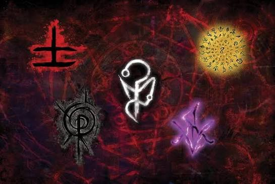

A Membrana e o Medo
O sistema de Ordem Paranormal gira em torno da Membrana. Quando o medo aumenta em uma região, a Membrana enfraquece, permitindo a entrada de entidades paranormais na nossa realidade.
Entenda as mecânicas fundamentais do sistema de RPG criado por Cellbit.
O sistema de Ordem Paranormal gira em torno da Membrana. Quando o medo aumenta em uma região, a Membrana enfraquece, permitindo a entrada de entidades paranormais na nossa realidade.

O sistema divide as missões em cenas de Investigação (busca por pistas), Ação/Combate (enfrentamento de ameaças) e Interlúdio (descanso e recuperação de Sanidade e Pontos de Esforço).